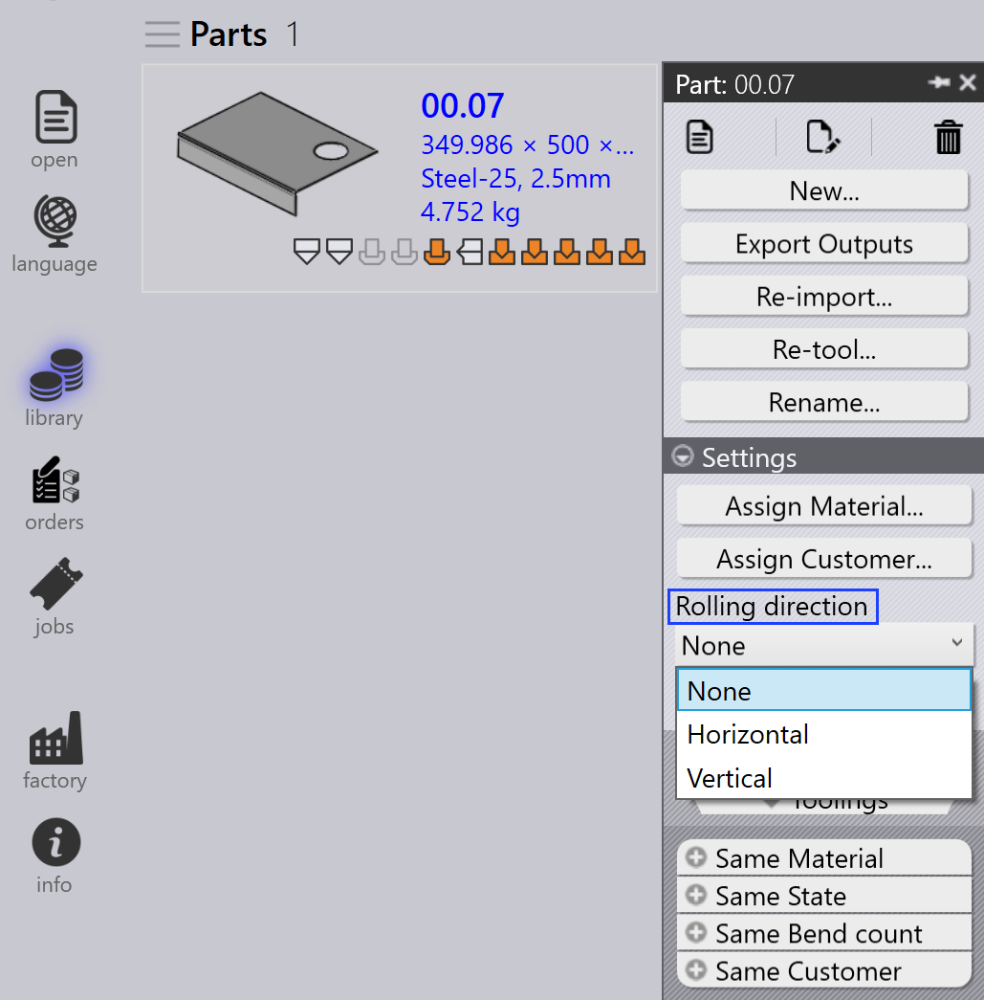

Πίνακας part
Αυτή η ενότητα επεξηγεί ενέργειες σχετικές με part όπως Νέα εισαγωγή…, Νέος εξοπλισμός…, Μετονομασία…, Εξαγωγή αποτελεσμάτων, κ.λπ., που χρησιμοποιούνται για τη διαχείριση στιγμιοτύπων part.

|
|


Νέα εισαγωγή…
-
Κάντε δεξί κλικ σε οποιοδήποτε part και κάντε κλικ στο Νέα εισαγωγή….

-
Όλα τα επιλεγμένα στιγμιότυπα tooling part σε όλες τις μηχανές διαγράφονται συμπεριλαμβανομένων των αυτόματων και χειροκίνητων στιγμιοτύπων tooling.
-
Τα υπάρχοντα αρχεία εξόδου (CAD, Bend και Cut) αφαιρούνται.
-
Τα parts εισάγονται εκ νέου και εφαρμόζεται νέα επικύρωση CAD και tooling για όλες τις μηχανές.
-
Νέα αρχεία εξόδου δημιουργούνται με βάση το ενημερωμένο αποτέλεσμα tooling.
Νέος εξοπλισμός…
-
Κάντε δεξί κλικ σε οποιοδήποτε part και κάντε κλικ στο Νέος εξοπλισμός….

-
Όλες οι μηχανές είναι επιλεγμένες από προεπιλογή και ομαδοποιούνται ως Laser, Punch, Panel, και Press brake.
-
Κάντε κλικ στο OK για να προχωρήσετε. Αυτό αφαιρεί τόσο τα αυτόματα όσο και τα χειροκίνητα στιγμιότυπα tooling για τις επιλεγμένες μηχανές και διαγράφει τα σχετικά αρχεία εξόδου.
-
Όταν το πλαίσιο ελέγχου Διατήρηση υφιστάμενων εξόδων είναι επιλεγμένο, μόνο τα parts των οποίων οι έξοδοι αφαιρέθηκαν νωρίτερα θα ξαναεφοδιαστούν με εργαλεία, οι άλλες έξοδοι παραμένουν ανεπηρέαστες. Εάν δεν είναι επιλεγμένο, όλα τα αρχεία εξόδου για τις επιλεγμένες μηχανές αφαιρούνται και αναδημιουργούνται κατά την επανεξοπλισμό.
|
Μετονομασία…
Αυτή η ενότητα επεξηγεί πώς να μετονομάσετε ένα ή πολλαπλά parts στο TruSmartCAM.
-
Κάντε δεξί κλικ στο part και κάντε κλικ στο Μετονομασία….

-
Εμφανίζεται ένας διάλογος επιβεβαίωσης μετονομασίας που εμφανίζει το τρέχον όνομα part.
-
Εισαγάγετε το νέο όνομα και κάντε κλικ στο εικονίδιο σημάδι επιλογής ✓ για επιβεβαίωση ή κάντε κλικ στο εικονίδιο σταυρό ✗ για ακύρωση της λειτουργίας μετονομασίας.

-
Για να μετονομάσετε πολλαπλά parts, επιλέξτε όλα τα απαιτούμενα parts, στη συνέχεια κάντε δεξί κλικ σε οποιοδήποτε από αυτά και κάντε κλικ στο Μετονομασία….
-
Εμφανίζεται ένας διάλογος επιβεβαίωσης με τον συνολικό αριθμό των επιλεγμένων parts.
-
Για κάθε part, εισαγάγετε το νέο όνομα και κάντε κλικ στο εικονίδιο σημάδι επιλογής ✓ για επιβεβαίωση ένα προς ένα.
-
Εάν κάποιο part επιλέχθηκε κατά λάθος, κάντε κλικ στο εικονίδιο σταυρού ✗ για ακύρωση. Εναλλακτικά, μπορείτε να κάνετε δεξί κλικ στο part και να κάνετε κλικ στο Ακύρωση μετονομασίας για να παραλείψετε τη μετονομασία.
Εξαγωγή αποτελεσμάτων
Αυτή η επιλογή εξάγει την έξοδο part στον προορισμό που έχει διαμορφωθεί στις Εργοστασιακές ρυθμίσεις. (Δείτε Bend Settings και Cut Settings)
Η τοποθεσία εξόδου ορίζεται ξεχωριστά για Bend, Fold και Cut στις αντίστοιχες ρυθμίσεις εξόδου τους. Όλα τα toolings που σχετίζονται με λειτουργίες bend, fold και cut εξάγονται για ολόκληρο το part.

Όπως φαίνεται παρακάτω, τα εξαγόμενα αρχεία αποθηκεύονται στον καθορισμένο φάκελο
(για παράδειγμα, C:\PraxData\Out\Reports).

| Τα εξαγόμενα αρχεία εξαρτώνται από τον τύπο λειτουργίας. Για λειτουργίες Bend και Fold, δημιουργούνται αρχεία NC και αναφορές. Για λειτουργίες Cut και Punch , εξάγονται μόνο τα αρχεία part. |
Εκχώρηση υλικού part
Τα parts με την κατάσταση Το υλικό δεν έχει αντιστοιχιστεί πρέπει να ενημερωθούν πριν από περαιτέρω επεξεργασία. Τα παρακάτω βήματα επεξηγούν πώς να εκχωρήσετε υλικό.
-
Κάντε δεξί κλικ στο part που εμφανίζει την κατάσταση Το υλικό δεν έχει αντιστοιχιστεί και επιλέξτε Αντιστοίχιση υλικού.

-
Ανοίγει το παράθυρο Αντιστοίχιση υλικού.

-
Ο διάλογος έχει τέσσερις ενότητες:
-
Προτάσεις - Προτείνει αυτόματα raw materials με βάση το πάχος του εισαγόμενου part.
-
Όλα τα υλικά - Παραθέτει όλους τους τύπους υλικού που ορίζονται στο TruSmartCAM.
-
Όλες οι πρώτες ύλες - Εμφανίζει όλα τα raw materials διαθέσιμα στο σύστημα.
-
Χρησιμοποιούμενες πρώτες ύλες - Εμφανίζει τα πιο πρόσφατα χρησιμοποιημένα raw materials για γρήγορη πρόσβαση.
-
-
Μπορείτε να χρησιμοποιήσετε το πεδίο Αναζήτηση… (Ctrl+F) στην κορυφή για να βρείτε γρήγορα υλικά. Για παράδειγμα, πληκτρολογήστε "steel" για να εμφανίσετε όλα τα ταιριαστά υλικά σε τις τρεις ενότητες.
-
Από τη φιλτραρισμένη λίστα, επιλέξτε το απαιτούμενο υλικό (π.χ., Steel-25) από τη λίστα Raw-Material.
-
Το επιλεγμένο υλικό θα εκχωρηθεί στο part.
Κατεύθυνση κύλισης
Το Κατεύθυνση κύλισης αναφέρεται στον προσανατολισμό του grain σε ένα part, το οποίο μπορεί να επηρεάσει τον τρόπο με τον οποίο το part κόβεται και επεξεργάζεται. Αυτή η επιλογή σας επιτρέπει να καθορίσετε την Κατεύθυνση κύλισης για ένα part στη Βιβλιοθήκη Part. Με βάση την επιλεγμένη κατεύθυνση, το part θα τοποθετηθεί στον σωστό προσανατολισμό για κοπή στις διαθέσιμες μηχανές.
-
Κάντε δεξί κλικ σε οποιοδήποτε πλακίδιο part στη Βιβλιοθήκη Part ή στο παράθυρο Job.
-
Επιλέξτε την προτιμώμενη κατεύθυνση κύλισης:
-
Καμία
-
Οριζόντια
-
Κατακόρυφα

-
-
Το part επανεφοδιάζεται αυτόματα με εργαλεία για όλες τις διαθέσιμες μηχανές κοπής με βάση την επιλεγμένη κατεύθυνση κύλισης.
-
Το πλακίδιο part θα εμφανίσει την επιλεγμένη κατεύθυνση κύλισης όπως φαίνεται παρακάτω: